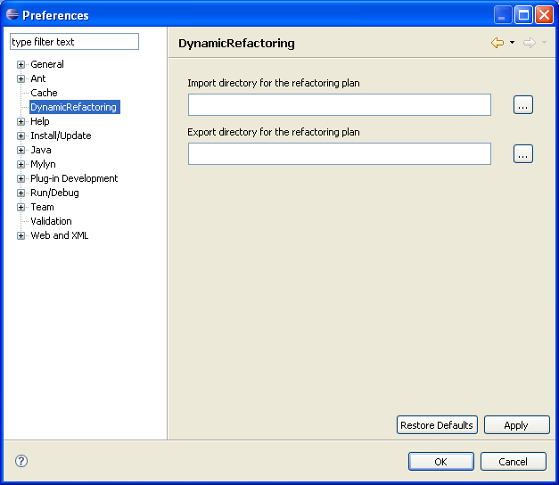
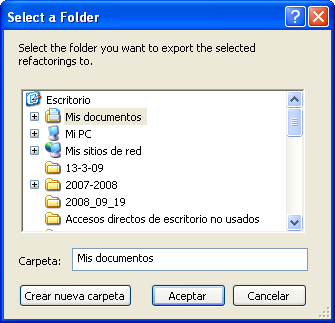
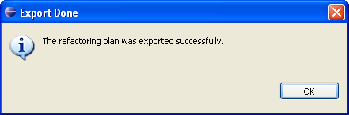

In this section appears how to export the refactoring plan that has been executed on a certain project, in such a way that later it could be executed on a new project that has the pertinent characteristics.
Inside Eclipse select the menu item Dynamic Refactoring > Export Refactoring Plan... to open the Dynamic Refactoring Export dialog.
The default location in which the plan will be exported can be set from the menu item Window > Preferences in the section "Export directory for the refactoring plan" of the submenu Dynamic Refactoring.

Preferences menu

output directory

Confirmation
This will create a folder with the refactoring plan structure which has the following files:
- A folder called refactorings that contains a folder for each refactoring of the plan.
- A XML file called refactoringPlan.xml keeping a description of each refactoring.
- A DTD file called refactoringPlanDTD.dtd containing the structure that must have the file refactoringPlan.xml so it can be interpreted by the application.
- A folder that contains all the repository files .class corresponding to the mechanisms (actions, preconditions and postcondiciones) which take part in the refactoring plan.
To cancel the export operation you can press the Cancel button.